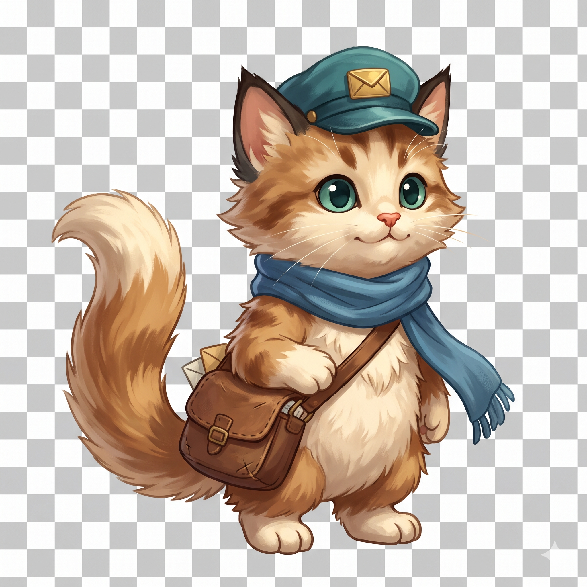
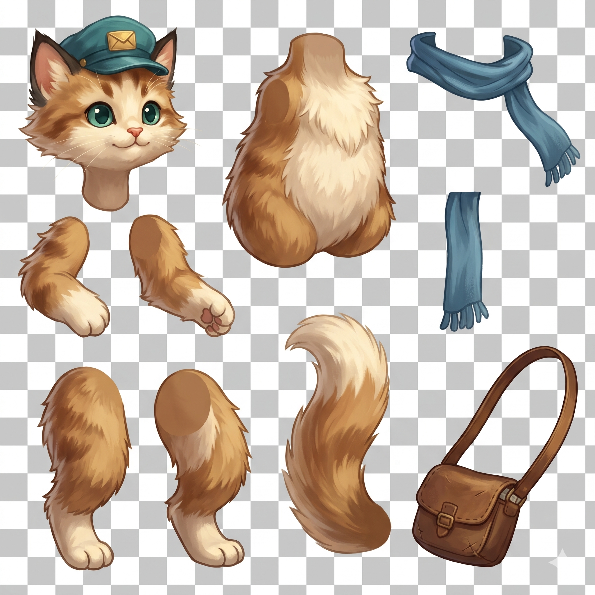
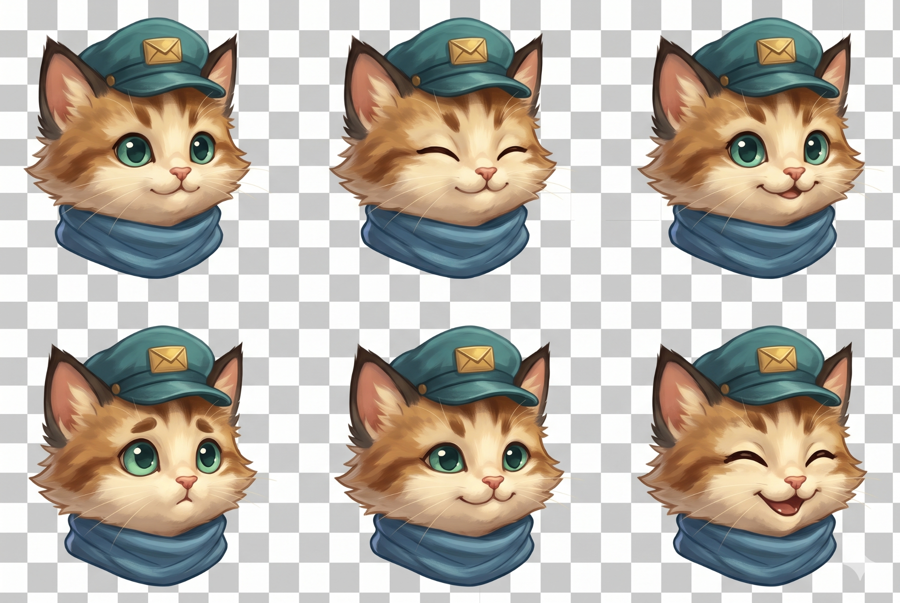
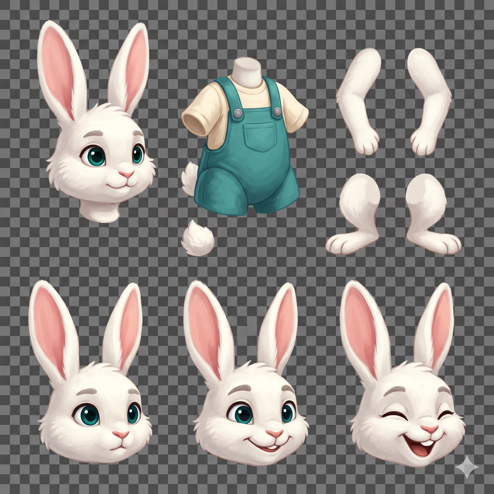
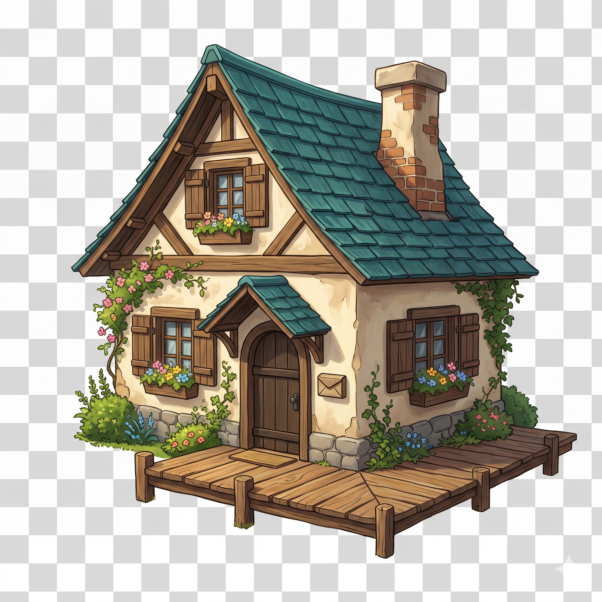
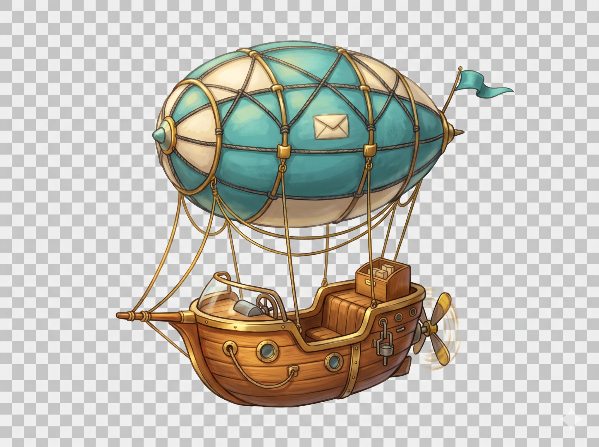
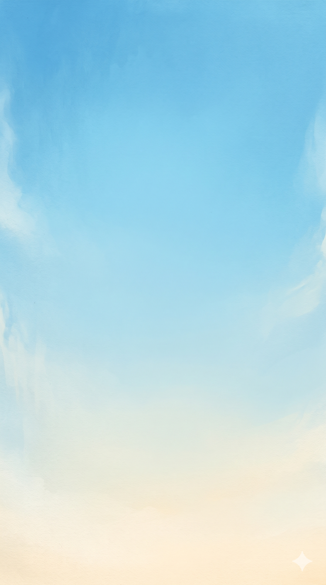
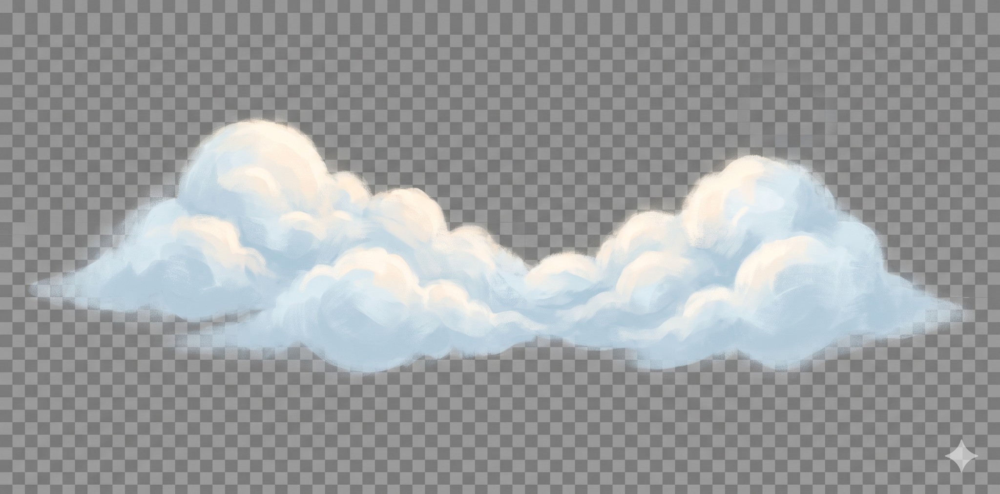
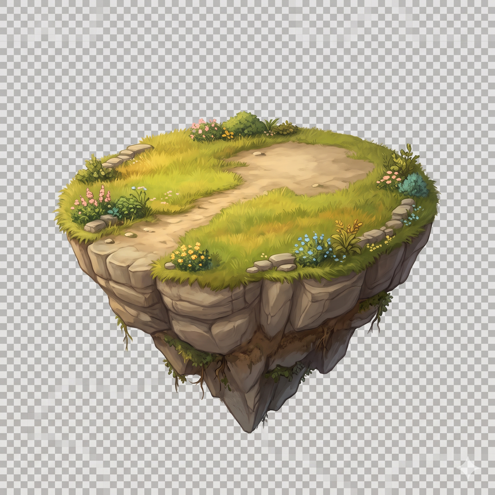
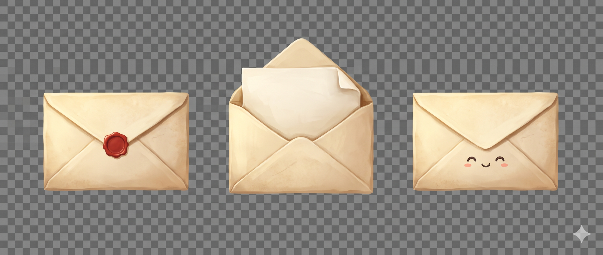

Uploaded Asset Review
Ten user-supplied PNG originals, preserved exactly as received. These are asset drafts for planning, not completed animation assets.
Review boundary
Actual pixels, dimensions, PNG mode, alpha extrema and original-byte SHA-256 were checked. No original has been edited, cropped, cleaned, sliced, recoloured or animated. Preview images below use CSS scaling only; open the full-resolution original for detail.
All ten display a small white four-point star mark at the lower right. It remains intact in each original. Obtain an appropriate clean final source before production use. No rig assembly, frame registration/playback, engine import or device testing has been performed.
Still missing from this upload batch: full-body rabbit customer, cockpit foreground overlay, heart-particle sheet, separated airship parts and courier handoff pose. There is no complete set of five individual houses/customers, bird loop or validated animation. Home/settings concepts from the earlier generation batch also remain pending.
Courier kitten — neutral full-body draft


Draft — transparency cleanup required
What is visible
Cream-and-caramel kitten with green eyes, dark ear tips, teal envelope-badge cap, blue scarf and brown mail satchel. Full silhouette, no goggles.
Review findings
- Gray checkerboard is baked into opaque pixels, not transparency.
- Single flattened pose; no separate motion parts or animation frames.
- White four-point star mark at bottom right.
- Compared with concept 01, the tail is larger and fluffier and body taller; identity details broadly match, but silhouette approval is still needed.
Next production steps — not performed
- Keep as identity reference; obtain true-alpha cutout with clean fur/whisker edges.
- Confirm silhouette, then use separate aligned parts/frames for motion.
Original integrity
SHA-256
51b741957c93d866a21f923c821774aac0da32ef639fc7553fe6642877dfdfa9Alpha range: 255–255. Transparent pixels: 0. Partial-alpha pixels: 0.
Courier kitten — exploded part-layout draft


Draft — incomplete rig-source breakdown
What is visible
Head with cap, torso, two whole arms/paws, two whole legs/feet, tail, scarf pieces and satchel/strap arranged separately on one image.
Review findings
- Opaque baked checkerboard.
- Upper/lower arms and upper/lower legs are not independently split as requested; hands and feet remain attached to whole limbs.
- This PNG is a single flattened sheet, not editable layers, a rig, or animation.
- Joint coverage, common scale and alignment have not been assembly-tested.
- White four-point star mark at bottom right.
Next production steps — not performed
- Obtain true-alpha individual parts and finish the missing limb segmentation.
- Test overlap coverage, pivots and rest-pose reconstruction before building a rig.
Original integrity
SHA-256
bf632bdbcf3baa103711d8eb30958bef1f045ad2f4ebf5a03f283c264d319f2bAlpha range: 255–255. Transparent pixels: 0. Partial-alpha pixels: 0.
Courier kitten — six expression studies


Draft — unregistered expression sheet
What is visible
Three-by-two sheet of capped kitten heads with scarf collars: neutral, closed eyes, small open smile, worried look, sidelong smile and delighted laugh.
Review findings
- Opaque baked checkerboard.
- Head, ear, cap and nose positioning varies between expressions; these are not verified registered swaps.
- Bottom-left expression reads worried rather than a neutral thoughtful glance; review for gentle non-shaming feedback.
- White four-point star mark at bottom right.
Next production steps — not performed
- Export six true-alpha heads to identical cells with a shared nose/neck anchor.
- Align silhouette and costume before testing expression swaps; choose or revise the thoughtful expression.
Original integrity
SHA-256
9136fa215faa3a91588230d3970e82fa1058f8dd9aef3610ef3a8f98a84dc659Alpha range: 255–255. Transparent pixels: 0. Partial-alpha pixels: 0.
Rabbit customer — part layout and three expression studies


Draft — incomplete motion-ready part separation
What is visible
White rabbit with pink inner ears, teal eyes, teal overalls and cream shirt: main head with ears attached, torso, paired whole arms, paired whole legs/feet, separate tail tuft and three lower expression heads (neutral, friendly smile, delighted).
Review findings
- Opaque baked checkerboard; no true transparent or soft-alpha edge pixels.
- Flattened layout, not individual layers, a rig or animation; upper/lower limb sections are not independently separated for jointed animation.
- Ears remain attached to each head; independent ear motion needs separate art.
- Tail tuft is supplied separately but another tuft remains baked into the torso; assembly must avoid duplicate tail appearance.
- Expression head anchors/scale and joint overlap coverage have not been assembly-tested.
- White four-point star mark at bottom right.
Next production steps — not performed
- Obtain true-alpha individual parts with clean white-fur edges.
- Separate ears and any limb joints needed for planned motion; reconcile attached/separate tail.
- Align the three expression heads and test rest-pose assembly before rigging.
Original integrity
SHA-256
9a1b1635184efaaecdd46bbb370ec887bba48f4c627bf107209605b0d553ab24Alpha range: 255–255. Transparent pixels: 0. Partial-alpha pixels: 0.
Number Line cottage — independent building draft


Draft — building source, not animated
What is visible
Cream timber cottage, teal roof, chimney, arched wooden door, envelope mailbox, flowers and attached timber dock. No animal, island or neighboring building.
Review findings
- Opaque baked checkerboard.
- Door, shutters and foliage are baked into the building; no opening/sway layers supplied.
- Shutters are shown open despite the prompt requesting a closed base state.
- White four-point star mark at bottom right.
Next production steps — not performed
- Obtain true-alpha building export and separate door/shutter/foliage parts for planned animation.
- Test dock and foundation fit with island 37; confirm desired shutter base state.
Original integrity
SHA-256
371afd41590eb1d8c3d157bf4c54aacf102935c1cecf349d1f79608d57a8f453Alpha range: 255–255. Transparent pixels: 0. Partial-alpha pixels: 0.
Tiny mail airship — complete vehicle draft


Draft — vehicle reference, not motion-ready
What is visible
Unpiloted teal-and-cream elongated balloon, rope rigging, wood gondola, empty cockpit, mail crate, teal pennant and rear propeller.
Review findings
- Opaque baked checkerboard.
- Single flattened vehicle; propeller, pennant, cockpit rim and balloon are not separated.
- Painted propeller motion streaks are static marks, not actual animation.
- Balloon is more elongated than canonical concept 01, and bow/cockpit faces left rather than the prompt's requested right.
- White four-point star mark at bottom right.
Next production steps — not performed
- Confirm vehicle silhouette/direction against concept 01 before creating matching cockpit overlay.
- Obtain true-alpha vehicle and separate clean propeller, flag and foreground cockpit rim for animation.
Original integrity
SHA-256
86371a1b4ca6cedea444615a8ed57fdb20722bed01ad6aac5b05dd259a0d5f8cAlpha range: 255–255. Transparent pixels: 0. Partial-alpha pixels: 0.
Portrait sky background


Usable background draft — opacity is appropriate
What is visible
Soft painterly blue sky fading to pale warm cream at the bottom, with very quiet wispy edge clouds and ample empty space.
Review findings
- White four-point star mark at bottom right remains in the artwork.
- Actual canvas is 1143 × 2048; cropping/scaling and long-route scrolling or tiling have not been tested.
Next production steps — not performed
- Keep background opaque; transparency is not required here.
- Request a clean final source and test portrait safe areas/route scrolling before production acceptance.
Original integrity
SHA-256
b380d09803175d8a6564c7764a68c366549a5a5cefc9b043b9c81f7fe40d9803Alpha range: 255–255. Transparent pixels: 0. Partial-alpha pixels: 0.
Far-distance cloud bank


Draft — true soft alpha required
What is visible
Broad blue-white painterly cloud bank with warm highlights, lower central valley and soft wispy edges.
Review findings
- Dark gray checkerboard is baked throughout the image and its wispy cloud edges.
- There are zero partially transparent pixels despite the translucent-looking edge treatment.
- White four-point star mark at bottom right.
Next production steps — not performed
- Obtain true-alpha cloud export, preserving smooth partial transparency in wisps.
- Test against both light and dark backgrounds before parallax use; avoid simply deleting checker colors.
Original integrity
SHA-256
604215131748fdf6d61b91b501e4541e64cebb1489b93df63d007a712c72f35eAlpha range: 255–255. Transparent pixels: 0. Partial-alpha pixels: 0.
Empty floating house-island base


Draft — compositing source, not assembled map tile
What is visible
Oval grassy rock island with tapered underside, flowers and bushes at rim, rear bare cottage placement area and path toward the front. No house or animal.
Review findings
- Opaque baked checkerboard.
- House/island perspective, foundation scale and dock alignment have not been composited and verified.
- White four-point star mark at bottom right.
Next production steps — not performed
- Obtain true-alpha island export with complete rock/grass edges.
- Test cottage 17 on the bare zone, leaving customer and docking clearance.
Original integrity
SHA-256
f801640d2c299ab8c3a9b85abf989111b1794df9607425aae63f0e1d818c1c63Alpha range: 255–255. Transparent pixels: 0. Partial-alpha pixels: 0.
Mail popup — three envelope states


Draft — unsliced opaque state sheet
What is visible
Three cream envelopes in a horizontal row: sealed with red wax, opened with letter emerging, and smiling delivered envelope.
Review findings
- Dark gray checkerboard is baked into opaque pixels.
- States are not independent exported sprites; shared canvas registration and transition timing are not verified.
- No separate heart-particle assets are present in this sheet.
- White four-point star mark at bottom right.
Next production steps — not performed
- Obtain true-alpha states as separate sprites with consistent envelope size and anchor.
- Use separate hearts/sparkles for the delivery celebration; animate the state transition later.
Original integrity
SHA-256
72d6e1df4daee53c1b92243b53cf882a182c30786cc6da572664a511cacec534Alpha range: 255–255. Transparent pixels: 0. Partial-alpha pixels: 0.
Keep the independent-asset requirement
Each house and each animated animal customer must remain separate assets; the courier travels onward with animation after each completed delivery. These uploaded sheets are source drafts toward that goal, not proof it is implemented. Continue with a true-alpha export and alignment review before committing to a rig or scene workflow.